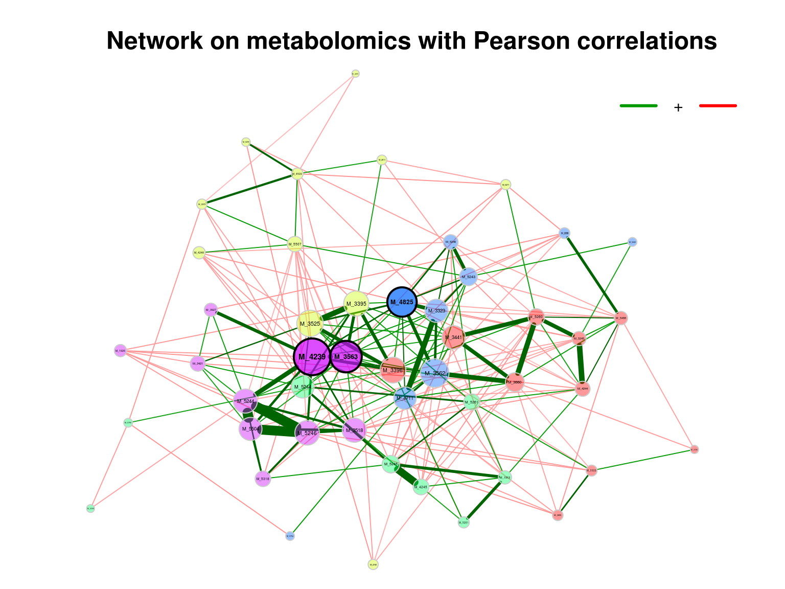
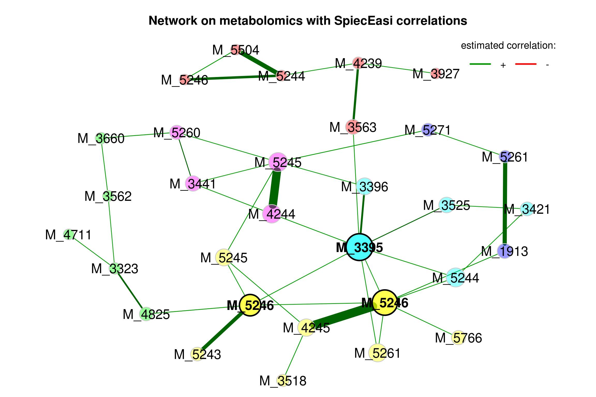
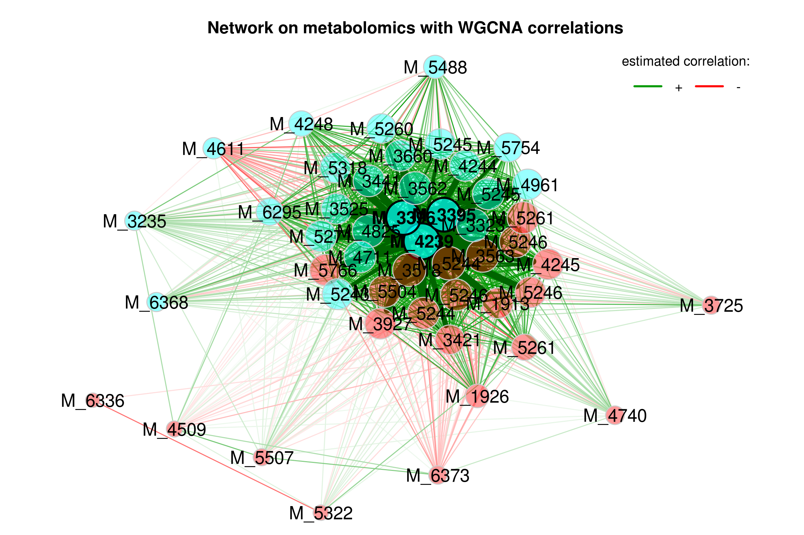
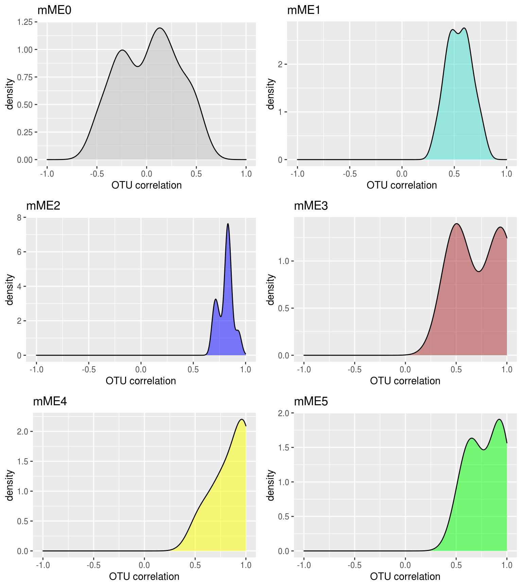
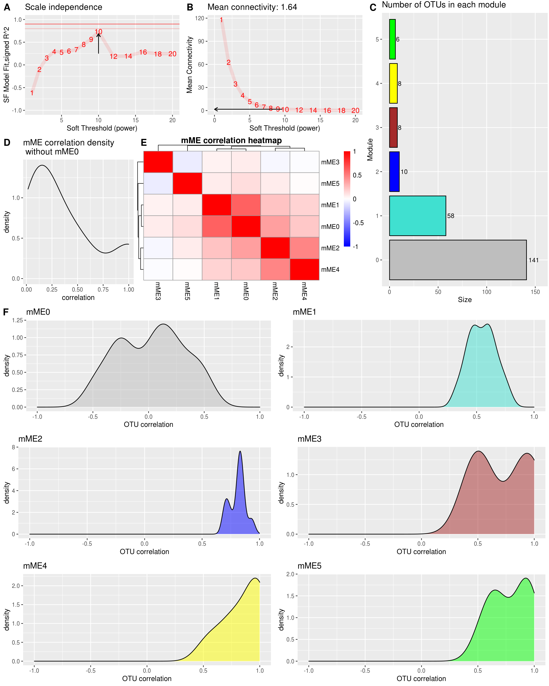
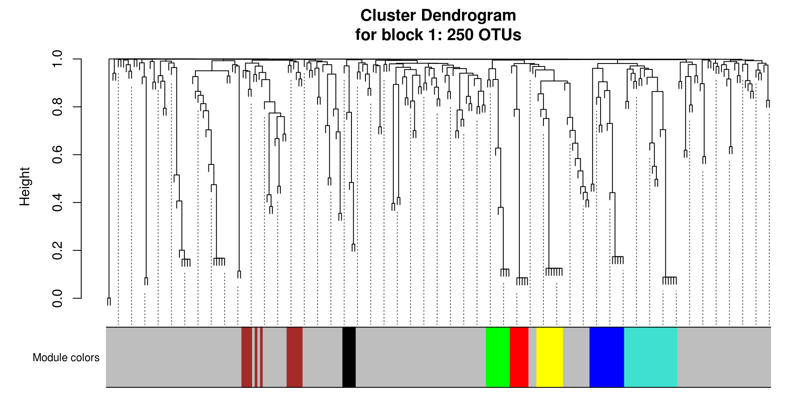

Chapter 2 WGCNA template
2.2 load data
- metagenomics
- metabolic
- metadata
mgs_profile <- read.table("/home/xuxiaomin/project/NanFangHospitalGvHD/02.MGS_output/metaphlan2_merged.tsv", header = TRUE, sep = "\t") # read metagenomic hirerachy table，only need ID column
metabolites_level <- read.xlsx("/home/zhaoyifan/zhaoyifan_Xbiome1/project/GVHD/metabolites_TM/ALL_sample_data.xlsx", sheetIndex = 1) # read metabolic hirerachy table
mgs <- read.table("/home/zhaoyifan/projects/Analytics/analytics/MultiOmics/tools/HAllA/GvHD/metagenomics.txt", header = TRUE, sep = "\t") # read metagenomic species level data
metabolites_data <- read.table("/home/zhaoyifan/projects/Analytics/analytics/MultiOmics/tools/HAllA/GvHD/metabolic.txt", header = TRUE, sep = "\t") # read metabolic data
metadata <- read.table("/home/zhaoyifan/projects/Analytics/analytics/MultiOmics/tools/HAllA/GvHD/metadata.txt", header = TRUE, sep = "\t") # read metadata- mgs_profile need taxanomy level column, as shwon in the table below
- Metabolic level data are selected as the Class.I and Class.II column in the following analysis, the details can be adjusted according to the data reality
mgs species: row names are Features, column names are Sample
metabolites_data: row names are Features, column names are Sample
2.3 restructured the hierarchy table
# taxa hierarchy table
mgs_species <- mgs_profile %>%
.[sapply(str_split(mgs_profile$ID, "\\|"), function(x) length(x) == 7), ]
taxa_table <- str_split_fixed(mgs_species$ID,"\\|", 7) %>% as.data.frame()
colnames(taxa_table) <- c("Kingdom", "Phylum", "Class", "Order", "Family", "Genus", "Species")
rownames(taxa_table) <- str_replace(taxa_table$Species, "s__", "")
# metabolic hierarchy table
metabolites_level <- metabolites_level %>% select(Index, Class.I, Class.II)
metabolites_level <- metabolites_level %>% column_to_rownames("Index")2.4 mgs standardization
2.4.2 using CSS method
data.metagenomeSeq <- metagenomeSeq::newMRexperiment(mgs) # Variables as rows, samples as columns
p <- metagenomeSeq::cumNormStat(data.metagenomeSeq)## Default value being used.data.cumnorm <- metagenomeSeq::cumNorm(data.metagenomeSeq, p=p)
mgs <- metagenomeSeq::MRcounts(data.cumnorm, norm=TRUE, log=TRUE) # log here is a +1 shifted log2
dim(mgs)## [1] 250 322.5 mgs constructe module
2.5.1 select power
powers <- c(1:10, seq(12,20,2)) # default
suppressWarnings(sft <- pickSoftThreshold(mgs_t,
powerVector = powers,
verbose = 1,
networkType = "signed",
corFn= "bicor"))## pickSoftThreshold: will use block size 250.
## pickSoftThreshold: calculating connectivity for given powers... ..0% ..100%
## Power SFT.R.sq slope truncated.R.sq mean.k. median.k. max.k.
## 1 1 0.6250 10.900 0.768 134.00 135.000 150.00
## 2 2 0.6400 4.310 0.814 75.60 75.700 93.20
## 3 3 0.5870 2.560 0.867 44.70 44.700 60.90
## 4 4 0.3110 1.210 0.715 27.80 27.900 41.70
## 5 5 0.2170 0.761 0.623 18.20 17.900 29.70
## 6 6 0.2000 0.561 0.699 12.50 12.100 21.80
## 7 7 0.1940 0.438 0.730 9.05 8.830 16.40
## 8 8 0.0156 0.114 0.753 6.80 6.510 13.60
## 9 9 0.0476 -0.223 0.620 5.30 4.830 11.80
## 10 10 0.1870 -0.526 0.470 4.26 3.720 10.50
## 11 12 0.5040 -0.857 0.661 2.99 2.310 8.89
## 12 14 0.6820 -0.965 0.666 2.27 1.470 7.93
## 13 16 0.7330 -1.080 0.659 1.84 1.070 7.33
## 14 18 0.8160 -1.020 0.804 1.57 0.777 6.94
## 15 20 0.8010 -0.986 0.808 1.38 0.587 6.67# Find the soft thresholding power beta to which co-expression similarity is raised to calculate adjacency.
# based on the criterion of approximate scale-free topology.
idx <- min(which((-sign(sft$fitIndices[,3])*sft$fitIndices[,2]) > 0.90))
if(is.infinite(idx)){
idx <- min(which((-sign(sft$fitIndices[,3])*sft$fitIndices[,2]) > 0.80))
if(!is.infinite(idx)){
st <- sft$fitIndices[idx,1]
} else{
idx <- which.max(-sign(sft$fitIndices[,3])*sft$fitIndices[,2])
st <- sft$fitIndices[idx,1]
}
} else{
st <- sft$fitIndices[idx,1]
}
# Plot Scale independence measure and Mean connectivity measure
# Scale-free topology fit index as a function of the soft-thresholding power
data.frame(Indices = sft$fitIndices[,1],
sfApprox = -sign(sft$fitIndices[,3])*sft$fitIndices[,2]) %>%
ggplot() +
geom_hline(yintercept = 0.9, color = "red", alpha = 0.6) + # corresponds to R^2 cut-off of 0.9
geom_hline(yintercept = 0.8, color = "red", alpha = 0.2) + # corresponds to R^2 cut-off of 0.8
geom_line(aes(x = Indices, y = sfApprox), color = "red", alpha = 0.1, size = 2.5) +
geom_text(mapping = aes(x = Indices, y = sfApprox, label = Indices), color = "red", size = 4) +
ggtitle("Scale independence") +
xlab("Soft Threshold (power)") +
ylab("SF Model Fit,signed R^2") +
xlim(1,20) +
ylim(-1,1) +
geom_segment(aes(x = st, y = 0.25, xend = st, yend = sfApprox[idx]-0.05),
arrow = arrow(length = unit(0.2,"cm")),
size = 0.5)-> scale_independence_plot
# Mean connectivity as a function of the soft-thresholding power
data.frame(Indices = sft$fitIndices[,1],
meanApprox = sft$fitIndices[,5]) %>%
ggplot() +
geom_line(aes(x = Indices, y = meanApprox), color = "red", alpha = 0.1, size = 2.5) +
geom_text(mapping = aes(x = Indices, y = meanApprox, label = Indices), color = "red", size = 4) +
xlab("Soft Threshold (power)") +
ylab("Mean Connectivity") +
geom_segment(aes(x = st-0.4,
y = sft$fitIndices$mean.k.[idx],
xend = 0,
yend = sft$fitIndices$mean.k.[idx]),
arrow = arrow(length = unit(0.2,"cm")),
size = 0.4) +
ggtitle(paste0("Mean connectivity: ",
round(sft$fitIndices$mean.k.[idx],2))) -> mean_connectivity_plot
cowplot::plot_grid(scale_independence_plot, mean_connectivity_plot, ncol = 2, align = "h", labels = c("A", "B"), label_size = 15) -> si_mc_plot
si_mc_plot
The number closest to the 0.8 line is 18, and the constructed adjacency matrix most closely fits with scale-free topology. Therefore power is 18.
2.5.2 Block-wise network construction and module detection
The function blockwiseModules will first pre cluster with fast crude clustering method to cluster OTUs into blocks not exceeding the maximum, blocks may therefore not be fully optimal in the end.
Change the parameters here to better reflect your own data.
if(!dir.exists("./result/")) {
dir.create("./result/")
}
Run_analysis <- TRUE
if(Run_analysis){
modules.mgs <- blockwiseModules(mgs_t,
power = st,
networkType = "signed",
TOMType = "signed",
corType = 'bicor',
maxPOutliers = 0.05,
deepSplit = 2,
pamStage = FALSE,
pamRespectsDendro = TRUE,
mergeCutHeight = 0.25,
replaceMissingAdjacencies = TRUE,
minModuleSize = 5, # There are fewer otus than genes, and that many might not be connected
numericLabels = TRUE,
saveTOMs = TRUE,
saveTOMFileBase = "./result/modules.mgs", #"/share/projects/Analytics/analytics/MultiOmics/tools/WGCNA/test/GVHD/bookdown_GVHD/result/modules.mgs",
verbose = 1)
rownames(modules.mgs$MEs) <- rownames(mgs_t)
names(modules.mgs$colors) <- colnames(mgs_t)
names(modules.mgs$unmergedColors) <- colnames(mgs_t)
hubs.mgs <- chooseTopHubInEachModule(mgs_t, modules.mgs$colors)
}## Calculating module eigengenes block-wise from all genes2.5.3 mgs module details
All samples are OK.
All OTUs are OK.
There where 8 modules found.
All module eigenOTUs are OK.
How many OTUs are there in each module?
table(modules.mgs$colors) %>%
as.data.frame() %>%
dplyr::rename(Module = Var1, Size = Freq) %>%
dplyr::mutate(Module_color = labels2colors(as.numeric(as.character(Module)))) -> module_size
module_size %>%
ggplot(aes(x = Module, y = Size, fill = Module)) +
geom_col(color = "#000000") +
ggtitle("Number of OTUs in each module") +
theme(legend.position = "none") +
scale_fill_manual(values = setNames(module_size$Module_color,module_size$Module)) +
geom_text(aes(label = Size),vjust = 0.5, hjust = -0.18, size = 3.5) +
ylim(0, max(module_size$Size)*1.1) +
theme(plot.margin = margin(2, 2, 2, 2, "pt")) +
coord_flip()-> module_size_barplot
module_size_barplot
cluster relationships between the module
# labels2colors(modules.mgs$colors)
plotEigengeneNetworks(modules.mgs$MEs, "Eigengene adjacency heatmap",
marDendro = c(3,3,2,4),
marHeatmap = c(3,4,2,2), plotDendrograms = T,
xLabelsAngle = 90)
table(modules.mgs$colors) %>% as.data.frame() -> res
res$`Module color` <- WGCNA::labels2colors(as.numeric(as.character(res$Var1)))
res <- res[, c(1,3,2)]
colnames(res) <- c("Module", "Module color", "Number of OTUs")
res %>% datatable()Dendrogram and module colors
# Plot the dendrogram and the module colors underneath for each block
for(i in seq_along(modules.mgs$dendrograms)){
plotDendroAndColors(modules.mgs$dendrograms[[i]], merged_colors[modules.mgs$blockGenes[[i]]],
"Module colors",
dendroLabels = FALSE, hang = 0.03,
addGuide = TRUE, guideHang = 0.05,
main = paste0("Cluster Dendrogram\n",
"for block ",
i,": ",
length(modules.mgs$blockGenes[[i]]),
" OTUs"))
}
Module (Eigengene) correlation
MEs <- modules.mgs$MEs
# Module correlation to other modules
MEs_R <- bicor(MEs, MEs, maxPOutliers = 0.05)## Warning in bicor(MEs, MEs, maxPOutliers = 0.05): bicor: zero MAD in variable 'x'. Pearson correlation
## was used for individual columns with zero (or missing) MAD.## Warning in bicor(MEs, MEs, maxPOutliers = 0.05): bicor: zero MAD in variable 'y'. Pearson correlation
## was used for individual columns with zero (or missing) MAD.idx.r <- which(rownames(MEs_R) == "ME0")
idx.c <- which(colnames(MEs_R) == "ME0")
MEs_R_noME0 <- MEs_R[-idx.r, -idx.c]MEs_R[upper.tri(MEs_R_noME0)] %>%
as.data.frame() %>%
dplyr::rename("correlation" = ".") %>%
ggplot(aes(x=correlation)) +
geom_density() +
ggtitle(paste0("mgs","ME correlation density\n without ","mgs" ,"ME0")) -> MEs_R_density
pheatmap::pheatmap(MEs_R, color = colorRampPalette(c("Blue", "White", "Red"))(100),
silent = T,
breaks = seq(-1,1,length.out = 101),
treeheight_row = 5,
treeheight_col = 5,
main = paste0("mgs","ME correlation heatmap"),
labels_row = paste0("mgs", rownames(MEs_R)),
labels_col = paste0("mgs", colnames(MEs_R))) -> MEs_R_Corr
cowplot::plot_grid(MEs_R_density, MEs_R_Corr$gtable, labels = c("D", "E"), label_size = 15, rel_widths = c(0.6, 1)) -> density_eigen
density_eigen
## [1] TRUE## [1] "32 samples" "250 OTUs"## [1] "250 OTUs" "8 modules"Show a plot of the intra modular correlation; How the OTUs within a module correlates to the module eigengene.
intra_cor <- c()
for (i in 1:ncol(mgs_t)) {
m <- modules.mgs$colors[i]
intra_cor[i] <- kME[i, paste0("ME", m)]
if(m != 0){
intra_cor[i] <- kME[i, paste0("ME", m)]
} else{
intra_cor[i] <- NA
}
}
idx <- which(is.na(intra_cor))
intra_cor <- intra_cor[-idx]
plot(density(intra_cor), main = "Correlations with module-eigenOTU (within module correlation)\nNo ME0", xlim = c(-1,1))
Show the same thing, but for each module individually, and color by module color.
# Corr within modules
corr_within_module <- function(mgs_t, modules, module_x = 1){
idx.omics_data <- which(modules$colors == module_x)
idx.me <- which(colnames(modules$MEs) == paste0("ME",module_x))
kME_x <- bicor(mgs_t[,idx.omics_data], modules$MEs[,idx.me], maxPOutliers = 0.05)
kME_x
}
ggplot.list <- list()
for(m in colnames(modules.mgs$MEs)){
h <- as.numeric(sub("ME","", m))
data.frame(x = suppressWarnings(corr_within_module(mgs_t = mgs_t, modules = modules.mgs, module_x = h))) %>%
ggplot() +
geom_density(aes(x = x), fill = labels2colors(h), color = "black", alpha = 0.5) +
xlim(-1, 1) +
xlab("OTU correlation")+
ggtitle(paste0("mgs",m)) -> da_plot
ggplot.list[[m]] <- da_plot
}
ggplot.list <- ggplot.list[ggplot.list %>% names() %>% sub("ME", "", .) %>% as.numeric() %>% order()]
Combine to one plot
cowplot::plot_grid(si_mc_plot , density_eigen, ncol = 1, rel_heights = c(0.8,1)) -> part_1
cowplot::plot_grid(part_1, module_size_barplot, labels = c("", "C"), label_size = 15, rel_widths = c(1,0.5)) -> part_2
cowplot::plot_grid(part_2, density_all_plot, ncol = 1, rel_heights = c(0.8,1), labels = c("", "F"), label_size = 15)
Hub genes
For each module it is possible to pick a hub gene with the function chooseTopHubInEachModule.
2.6 metabolites constructe module
2.6.1 select power
powers <- c(1:10, seq(12,20,2))
suppressWarnings(sft <- pickSoftThreshold(metabolites_t,
powerVector = powers,
verbose = 1,
networkType = "signed",
corFn= "bicor"))## pickSoftThreshold: will use block size 811.
## pickSoftThreshold: calculating connectivity for given powers... ..0% ..100%
## Power SFT.R.sq slope truncated.R.sq mean.k. median.k. max.k.
## 1 1 0.72200 9.9100 0.756 456.00 462.00 520.0
## 2 2 0.79300 4.6000 0.924 273.00 278.00 345.0
## 3 3 0.75800 2.8500 0.951 172.00 175.00 238.0
## 4 4 0.57200 1.7000 0.941 113.00 113.00 176.0
## 5 5 0.26700 0.7160 0.932 76.60 76.00 134.0
## 6 6 0.00268 0.0619 0.861 53.80 52.30 108.0
## 7 7 0.11500 -0.3880 0.920 38.90 36.70 89.5
## 8 8 0.30800 -0.7520 0.901 28.90 26.60 75.3
## 9 9 0.41300 -0.9160 0.918 22.00 19.40 64.3
## 10 10 0.53800 -1.2300 0.901 17.00 14.50 55.5
## 11 12 0.64600 -1.5400 0.935 10.80 8.60 42.5
## 12 14 0.71500 -1.6400 0.954 7.32 5.48 33.4
## 13 16 0.75500 -1.6800 0.960 5.23 3.52 26.8
## 14 18 0.77000 -1.7300 0.946 3.90 2.49 21.9
## 15 20 0.74400 -1.7800 0.912 3.03 1.74 18.1# Find the soft thresholding power beta to which co-expression similarity is raised to calculate adjacency.
# based on the criterion of approximate scale-free topology.
idx <- min(which((-sign(sft$fitIndices[,3])*sft$fitIndices[,2]) > 0.90))
if(is.infinite(idx)){
idx <- min(which((-sign(sft$fitIndices[,3])*sft$fitIndices[,2]) > 0.80))
if(!is.infinite(idx)){
st <- sft$fitIndices[idx,1]
} else{
idx <- which.max(-sign(sft$fitIndices[,3])*sft$fitIndices[,2])
st <- sft$fitIndices[idx,1]
}
} else{
st <- sft$fitIndices[idx,1]
}
# Plot Scale independence measure and Mean connectivity measure
# Scale-free topology fit index as a function of the soft-thresholding power
data.frame(Indices = sft$fitIndices[,1],
sfApprox = -sign(sft$fitIndices[,3])*sft$fitIndices[,2]) %>%
ggplot() +
geom_hline(yintercept = 0.9, color = "red", alpha = 0.6) + # corresponds to R^2 cut-off of 0.9
geom_hline(yintercept = 0.8, color = "red", alpha = 0.2) + # corresponds to R^2 cut-off of 0.8
geom_line(aes(x = Indices, y = sfApprox), color = "red", alpha = 0.1, size = 2.5) +
geom_text(mapping = aes(x = Indices, y = sfApprox, label = Indices), color = "red", size = 4) +
ggtitle("Scale independence") +
xlab("Soft Threshold (power)") +
ylab("SF Model Fit,signed R^2") +
xlim(1,20) +
ylim(-1,1) +
geom_segment(aes(x = st, y = 0.25, xend = st, yend = sfApprox[idx]-0.05),
arrow = arrow(length = unit(0.2,"cm")),
size = 0.5)-> scale_independence_plot
# Mean connectivity as a function of the soft-thresholding power
data.frame(Indices = sft$fitIndices[,1],
meanApprox = sft$fitIndices[,5]) %>%
ggplot() +
geom_line(aes(x = Indices, y = meanApprox), color = "red", alpha = 0.1, size = 2.5) +
geom_text(mapping = aes(x = Indices, y = meanApprox, label = Indices), color = "red", size = 4) +
xlab("Soft Threshold (power)") +
ylab("Mean Connectivity") +
geom_segment(aes(x = st-0.4,
y = sft$fitIndices$mean.k.[idx],
xend = 0,
yend = sft$fitIndices$mean.k.[idx]),
arrow = arrow(length = unit(0.2,"cm")),
size = 0.4) +
ggtitle(paste0("Mean connectivity: ",
round(sft$fitIndices$mean.k.[idx],2))) -> mean_connectivity_plot
cowplot::plot_grid(scale_independence_plot, mean_connectivity_plot, ncol = 2, align = "h", labels = c("A", "B"), label_size = 15) -> si_mc_plot
si_mc_plot
The power is 18
2.6.2 Block-wise network construction and module detection
The function blockwiseModules will first pre cluster with fast crude clustering method to cluster OTUs into blocks not exceeding the maximum, blocks may therefore not be fully optimal in the end.
Change the parameters here to better reflect your own data.
Run_analysis <- TRUE
if(Run_analysis){
modules.metabolites <- blockwiseModules(metabolites_t,
power = st,
networkType = "signed",
TOMType = "signed",
corType = 'bicor',
maxPOutliers = 0.05,
deepSplit = 2,
pamStage = FALSE,
pamRespectsDendro = TRUE,
mergeCutHeight = 0.25,
replaceMissingAdjacencies = TRUE,
minModuleSize = 5, # There are fewer otus than genes, and that many might not be connected
numericLabels = TRUE,
saveTOMs = TRUE,
saveTOMFileBase = "./result/module.metabolites", #"/share/projects/Analytics/analytics/MultiOmics/tools/WGCNA/test/GVHD/bookdown_GVHD/result/module.metabolites",
verbose = 1)
rownames(modules.metabolites$MEs) <- rownames(metabolites_t)
names(modules.metabolites$colors) <- colnames(metabolites_t)
names(modules.metabolites$unmergedColors) <- colnames(metabolites_t)
hubs.metabolites <- chooseTopHubInEachModule(metabolites_t, modules.metabolites$colors)
}## Calculating module eigengenes block-wise from all genes2.6.3 metabolites module details
All samples are OK.
All OTUs are OK.
There where 27 modules found.
All module eigenOTUs are OK.
How many Metabolites are there in each module?
table(modules.metabolites$colors) %>%
as.data.frame() %>%
dplyr::rename(Module = Var1, Size = Freq) %>%
dplyr::mutate(Module_color = labels2colors(as.numeric(as.character(Module)))) -> module_size
module_size %>%
ggplot(aes(x = Module, y = Size, fill = Module)) +
geom_col(color = "#000000") +
ggtitle("Number of Metabolites in each module") +
theme(legend.position = "none") +
scale_fill_manual(values = setNames(module_size$Module_color,module_size$Module)) +
geom_text(aes(label = Size),vjust = 0.5, hjust = -0.18, size = 3.5) +
ylim(0, max(module_size$Size)*1.1) +
theme(plot.margin = margin(2, 2, 2, 2, "pt")) +
coord_flip()-> module_size_barplot
module_size_barplotcluster relationships between the module
# labels2colors(modules.metabolites$colors)
plotEigengeneNetworks(modules.metabolites$MEs, "Eigengene adjacency heatmap",
marDendro = c(3,3,2,4),
marHeatmap = c(3,4,2,2), plotDendrograms = T,
xLabelsAngle = 90)
table(modules.metabolites$colors) %>% as.data.frame() -> res
res$`Module color` <- WGCNA::labels2colors(as.numeric(as.character(res$Var1)))
res <- res[, c(1,3,2)]
colnames(res) <- c("Module", "Module color", "Number of metabolic")
res %>% datatable()Dendrogram and module colors
# Plot the dendrogram and the module colors underneath for each block
for(i in seq_along(modules.metabolites$dendrograms)){
plotDendroAndColors(modules.metabolites$dendrograms[[i]], merged_colors[modules.metabolites$blockGenes[[i]]],
"Module colors",
dendroLabels = FALSE, hang = 0.03,
addGuide = TRUE, guideHang = 0.05,
main = paste0("Cluster Dendrogram\n",
"for block ",
i,": ",
length(modules.metabolites$blockGenes[[i]]),
" metabolic"))
}Module (Eigengene) correlation
MEs <- modules.metabolites$MEs
# Module correlation to other modules
MEs_R <- bicor(MEs, MEs, maxPOutliers = 0.05)
idx.r <- which(rownames(MEs_R) == "ME0")
idx.c <- which(colnames(MEs_R) == "ME0")
MEs_R_noME0 <- MEs_R[-idx.r, -idx.c]MEs_R[upper.tri(MEs_R_noME0)] %>%
as.data.frame() %>%
dplyr::rename("correlation" = ".") %>%
ggplot(aes(x=correlation)) +
geom_density() +
ggtitle(paste0("mbs","ME correlation density\n without ","mbs" ,"ME0")) -> MEs_R_density
pheatmap::pheatmap(MEs_R, color = colorRampPalette(c("Blue", "White", "Red"))(100),
silent = T,
breaks = seq(-1,1,length.out = 101),
treeheight_row = 5,
treeheight_col = 5,
main = paste0("mbs","ME correlation heatmap"),
labels_row = paste0("mbs", rownames(MEs_R)),
labels_col = paste0("mbs", colnames(MEs_R))) -> MEs_R_Corr
cowplot::plot_grid(MEs_R_density, MEs_R_Corr$gtable, labels = c("D", "E"), label_size = 15, rel_widths = c(0.6, 1)) -> density_eigen
density_eigen
## [1] TRUE## [1] "32 samples" "811 metabolic"kME <- bicor(metabolites_t, MEs, maxPOutliers = 0.05)
dim(kME) %>% paste0(c(" metabolic", " modules"))## [1] "811 metabolic" "27 modules"Show a plot of the intra modular correlation; How the OTUs within a module correlates to the module eigengene.
intra_cor <- c()
for (i in 1:ncol(metabolites_t)) {
m <- modules.metabolites$colors[i]
intra_cor[i] <- kME[i, paste0("ME", m)]
if(m != 0){
intra_cor[i] <- kME[i, paste0("ME", m)]
} else{
intra_cor[i] <- NA
}
}
idx <- which(is.na(intra_cor))
intra_cor <- intra_cor[-idx]
plot(density(intra_cor), main = "Correlations with module-eigenMBS (within module correlation)\nNo ME0", xlim = c(-1,1))Show the same thing, but for each module individually, and color by module color.
# Corr within modules
corr_within_module <- function(metabolites_t, modules, module_x = 1){
idx.omics_data <- which(modules$colors == module_x)
idx.me <- which(colnames(modules$MEs) == paste0("ME",module_x))
kME_x <- bicor(metabolites_t[,idx.omics_data], modules$MEs[,idx.me], maxPOutliers = 0.05)
kME_x
}
ggplot.list <- list()
for(m in colnames(modules.metabolites$MEs)){
h <- as.numeric(sub("ME","", m))
data.frame(x = suppressWarnings(corr_within_module(metabolites_t = metabolites_t, modules = modules.metabolites, module_x = h))) %>%
ggplot() +
geom_density(aes(x = x), fill = labels2colors(h), color = "black", alpha = 0.5) +
xlim(-1, 1) +
xlab("metabolic correlation")+
ggtitle(paste0("mbs",m)) -> da_plot
ggplot.list[[m]] <- da_plot
}
ggplot.list <- ggplot.list[ggplot.list %>% names() %>% sub("ME", "", .) %>% as.numeric() %>% order()]cowplot::plot_grid(plotlist = ggplot.list, ncol = 5) -> density_all_plot # ncol 可以根据module的大小调整
density_all_plotCombine to one plot
cowplot::plot_grid(si_mc_plot , density_eigen, ncol = 1, rel_heights = c(0.8,1)) -> part_1
cowplot::plot_grid(part_1, module_size_barplot, labels = c("", "C"), label_size = 15, rel_widths = c(1,0.5)) -> part_2
cowplot::plot_grid(part_2, density_all_plot, ncol = 1, rel_heights = c(0.8,1), labels = c("", "F"), label_size = 15)
Hub metabolic
For each module it is possible to pick a hub metabolic with the function chooseTopHubInEachModule.
2.7 metabolites, mgs and metadata association
X_eigengenes <- modules.metabolites$MEs # X_eigengenes is metabolic
Y_eigengenes <- modules.mgs$MEs # Y_eigengenes is mgs# Create a dendrogram of the metabolites eigengenes to organise the final plots.
X_ME_dendro <- hclust(as.dist(1 - WGCNA::bicor(X_eigengenes, maxPOutliers = 0.05)), method = "ward.D2")heatmap_colors <- colorRampPalette(c("#18b29f","#FFFFFF","#ac6721"), interpolate = "spline", space = "rgb")(51)
annotation_col <- metadata %>%
t() %>%
as.data.frame() %>%
select(V1_outcome, GVHD_type, Donor)
annotation_colors <- list(
V1_outcome = c(`CR` = "#F08A46", `PR` = "#8EB470", `NR` = "#B7CFA4"),
GVHD_type = c(`aGVHD` = "red", `cGVHD` = "green"),
Donor = c(`DO1` = "paleturquoise", `DO2` = "palevioletred")
)
X_eigengenes_to_plot <-
dplyr::inner_join(annotation_col %>%
rownames_to_column(var = "sampleName"),
X_eigengenes %>%
rownames_to_column(var = "sampleName"),
by = "sampleName") %>%
dplyr::arrange(V1_outcome, GVHD_type, Donor) %>% # The order at which the columns should appear, given that there is no clustering.
dplyr::select(sampleName, starts_with("ME")) %>%
tibble::column_to_rownames(var = "sampleName") %>%
t()
pheatmap::pheatmap(X_eigengenes_to_plot,
cluster_cols = TRUE,
cluster_rows = X_ME_dendro,
treeheight_row = 20,
cutree_rows = 4,
cutree_cols = 4,
color = heatmap_colors,
fontsize = 10,
fontsize_col = 6,
annotation_colors = annotation_colors,
annotation_col = annotation_col,
silent = F,
labels_row = paste0("mb", rownames(X_eigengenes_to_plot)),
main = paste("Metabolites Module 'expression'\n")) -> X_plot
2.7.0.1 Correlate modules from metabolic and metagenomics.
p.value_matr <- corr.value_matr <- matrix(ncol = ncol(Y_eigengenes),
nrow = ncol(X_eigengenes),
dimnames = list(colnames(X_eigengenes),
colnames(Y_eigengenes)))
for(i in 1:ncol(X_eigengenes)){
for(j in 1:ncol(Y_eigengenes)){
cor.res <- cor.test(X_eigengenes[,i], Y_eigengenes[,j])
p.value_matr[i, j] <- cor.res$p.value
corr.value_matr[i, j] <- cor.res$estimate
}
}
# Correct for number of tests
p.value_matr.adjust <- p.adjust(p.value_matr, method = "fdr")
dim(p.value_matr.adjust) <- dim(p.value_matr)
dimnames(p.value_matr.adjust) <- list(colnames(X_eigengenes), colnames(Y_eigengenes))
# Add significance level.
# One star means a p-value of less than 0.05; Two stars is less than 0.01, and three, is less than 0.001.
signif_matrix <- rep("", length(p.value_matr))
three_star <- which( p.value_matr <= 0.001)
signif_matrix[three_star] <- "***"
two_star <- which((p.value_matr <= 0.01) & (p.value_matr > 0.001))
signif_matrix[two_star] <- "**"
one_star <- which((p.value_matr <= 0.05) & (p.value_matr > 0.01))
signif_matrix[one_star] <- "*"
dim(signif_matrix) = dim(p.value_matr) # Give textMatrix the correct dimensions
# Collect all results into a list.
Y_corr_X <- list(p_value = p.value_matr,
p_value_adj = p.value_matr.adjust,
signif_matrix = signif_matrix,
correlation = corr.value_matr)
rm(p.value_matr, p.value_matr.adjust, signif_matrix, corr.value_matr)heatmap_colors <- colorRampPalette(rev(RColorBrewer::brewer.pal(n = 6, name ="RdBu")))(51)
pheatmap::pheatmap(Y_corr_X$correlation,
color = heatmap_colors,
treeheight_col = 0,
treeheight_row = 0, # will be shown on the transcriptomics ME heatmap
cluster_rows = X_ME_dendro,
cutree_rows = 4,
display_numbers = Y_corr_X$signif_matrix,
fontsize_number = 10,
breaks = seq(from = -1, to = 1, length.out = 51),
silent = F,
show_rownames = F,
labels_row = paste0("mg", rownames(Y_corr_X$correlation)),
labels_col = paste0("mg", colnames(Y_corr_X$correlation)),
main = "EigenOTUs") -> Y_corr_X_plot
2.8 Visualization network
The strong correlation between mgME3 and mbME1 is the modules of interest, and we wondered if they contain those bacteria and metabolites, which ara published in the existing literature, or if there is a potential mining value.
So we visualize network in mgME3 and mbME1 (In the practical application，find the module you are interested in for visualization)
Visualize mgME3
#load(file = "/share/projects/Analytics/analytics/MultiOmics/tools/WGCNA/test/GVHD/bookdown_GVHD/result/modules.mgs-block.1.RData")
load(file = "./result/modules.mgs-block.1.RData")
# The TOM is saved as a dist object and needs to be converted to a matrix
TOM <- as.matrix(TOM)
# Add OTU names to the TOM matrix. It is symmetrical so rownames = colnames
rownames(TOM) <- colnames(TOM) <- names(modules.mgs$colors)Which taxonomic level should the graph be colored with in addition to modules?
Convert module labels and taxonomy to hex colors
taxonomy_info <-
taxa_table %>%
rownames_to_column(var = "OTU_name") %>%
dplyr::select("OTU_name", selected_taxa) %>%
mutate_all(.funs = list(as.character))
module_info <-
modules.mgs$colors %>%
as.data.frame() %>%
rownames_to_column(var = "OTU_name") %>%
dplyr::rename(Module = ".") %>%
filter(Module == 3)
# selected module, here is ME3
TOM <- TOM[module_info$OTU_name, module_info$OTU_name]
graph_info <- left_join(module_info, taxonomy_info, by = "OTU_name")
# Converts R-colors to hex colors
color2hex <- function(x){
x <- col2rgb(x)
rgb(x[1,], x[2,], x[3,], maxColorValue = 255)
}
# Add specific colors to the taxa
taxa_colors <-
graph_info %>%
dplyr::select(selected_taxa) %>%
unique() %>%
mutate(tax_color = colorRampPalette(RColorBrewer::brewer.pal(8, "Accent"))(nrow(.)))
graph_info_colors <-
left_join(graph_info, taxa_colors) %>%
mutate(module_color = WGCNA::labels2colors(Module)) %>%
mutate(module_color = color2hex(module_color)) %>%
mutate(module_color = paste0(module_color,70))## Joining, by = "Genus"If all lines are too thick, reduce the strength (between 0 and 1). The lower the number the weaker the lines.
g <- graph.adjacency(TOM, mode="undirected", weighted= TRUE)
#~https://stackoverflow.com/questions/28366329/how-to-scale-edge-colors-igraph
igraph::delete.edges(g, which(E(g)$weight <1))## IGRAPH 64de29f UNW- 12 0 --
## + attr: name (v/c), weight (e/n)
## + edges from 64de29f (vertex names):E(g)$width <- E(g)$weight*strength_adjust + min(E(g)$weight)
E(g)$color <- "red"
set.seed(231) # Ensures the same layout given the same data.
l <- layout_with_fr(g, weights = E(g)$weight)
# Order graph_info_colors by the graph
graph_info_colors <- graph_info_colors[which(graph_info_colors$OTU_name %in% V(g)$name),]
# Ensure that the names are in the same order
if(all(V(g)$name == graph_info_colors$OTU_name)){cat("\nOTU names match")}##
## OTU names match# Add square shapes to hub OTUs
V(g)$shape <- ifelse(V(g)$name %in% hubs.mgs[-1], "square", "circle") #-1 means dont use module 0
# OTUs in modules have larger nodes
V(g)$size <- ifelse(graph_info_colors$Module != 0, 10, 5)
# And larger text
V(g)$label.cex <- ifelse(graph_info_colors$Module != 0, 0.8, 0.4)
# Remove everything but the number to increase readability
V(g)$name = sub("OTU_", "", graph_info_colors$OTU_name)Find distinct entires for the plot legends
module_labels <-
graph_info_colors %>%
dplyr::select(Module, module_color) %>%
distinct() %>%
arrange(Module)
tax_labels <-
graph_info_colors %>%
dplyr::select(selected_taxa, tax_color) %>%
distinct()Plot the graphs, leftmost is colored by module, rightmost is colored by taxonomic classification
par(mfrow = c(1,2))
par(mar = c(0,0,0,0))
# plot(g, layout = l, vertex.color = graph_info_colors$module_color)
# # legend("topleft", legend = paste0("mM", 0:(nrow(module_labels)-1)), fill=module_labels$module_color)
# legend("topleft", legend = paste0("mgsM", 3), fill=module_labels$module_color)
plot(g, layout = l, vertex.color = graph_info_colors$tax_color)
legend("topleft", legend = tax_labels$Genus, fill=tax_labels$tax_color)
par(mfrow = c(1,1))
Visualize mbME1
#load(file = "/share/projects/Analytics/analytics/MultiOmics/tools/WGCNA/test/GVHD/bookdown_GVHD/result/module.metabolites-block.1.RData")
load(file = "./result/module.metabolites-block.1.RData")
# The TOM is saved as a dist object and needs to be converted to a matrix
TOM <- as.matrix(TOM)
# Add OTU names to the TOM matrix. It is symmetrical so rownames = colnames
rownames(TOM) <- colnames(TOM) <- names(modules.metabolites$colors)Which metabolic level should the graph be colored with in addition to modules?
Convert module labels and taxonomy to hex colors
taxonomy_info <-
metabolites_level %>%
rownames_to_column(var = "mbs_name") %>%
dplyr::select("mbs_name", selected_taxa) %>%
mutate_all(.funs = list(as.character))
module_info <-
modules.metabolites$colors %>%
as.data.frame() %>%
rownames_to_column(var = "mbs_name") %>%
dplyr::rename(Module = ".") %>%
filter(Module == 1)
# selected module, here is ME1
TOM <- TOM[module_info$mbs_name, module_info$mbs_name]
graph_info <- left_join(module_info, taxonomy_info, by = "mbs_name")
# Converts R-colors to hex colors
color2hex <- function(x){
x <- col2rgb(x)
rgb(x[1,], x[2,], x[3,], maxColorValue = 255)
}
# Add specific colors to the taxa
taxa_colors <-
graph_info %>%
dplyr::select(selected_taxa) %>%
unique() %>%
mutate(tax_color = colorRampPalette(RColorBrewer::brewer.pal(8, "Accent"))(nrow(.)))
graph_info_colors <-
left_join(graph_info, taxa_colors) %>%
mutate(module_color = WGCNA::labels2colors(Module)) %>%
mutate(module_color = color2hex(module_color)) %>%
mutate(module_color = paste0(module_color,70))## Joining, by = "Class.II"If all lines are too thick, reduce the strength (between 0 and 1). The lower the number the weaker the lines.
g <- graph.adjacency(TOM, mode="undirected", weighted= TRUE)
#~https://stackoverflow.com/questions/28366329/how-to-scale-edge-colors-igraph
igraph::delete.edges(g, which(E(g)$weight <1))## IGRAPH 6fb14af UNW- 54 0 --
## + attr: name (v/c), weight (e/n)
## + edges from 6fb14af (vertex names):E(g)$width <- E(g)$weight*strength_adjust + min(E(g)$weight)
E(g)$color <- "red"
set.seed(231) # Ensures the same layout given the same data.
l <- layout_with_fr(g, weights = E(g)$weight)
# Order graph_info_colors by the graph
graph_info_colors <- graph_info_colors[which(graph_info_colors$mbs_name %in% V(g)$name),]
# Ensure that the names are in the same order
if(all(V(g)$name == graph_info_colors$mbs_name)){cat("\nmbs names match")}##
## mbs names match# Add square shapes to hub OTUs
V(g)$shape <- ifelse(V(g)$name %in% hubs.metabolites[-1], "square", "circle") #-1 means dont use module 0
# OTUs in modules have larger nodes
V(g)$size <- ifelse(graph_info_colors$Module != 0, 10, 5)
# And larger text
V(g)$label.cex <- ifelse(graph_info_colors$Module != 0, 0.8, 0.4)
# Remove everything but the number to increase readability
V(g)$name = sub("mbs_", "", graph_info_colors$mbs_name)Find distinct entires for the plot legends
module_labels <-
graph_info_colors %>%
dplyr::select(Module, module_color) %>%
distinct() %>%
arrange(Module)
tax_labels <-
graph_info_colors %>%
dplyr::select(selected_taxa, tax_color) %>%
distinct()Plot the graphs, leftmost is colored by module, rightmost is colored by taxonomic classification
par(mfrow = c(1,2))
par(mar = c(0,0,0,0))
# plot(g, layout = l, vertex.color = graph_info_colors$module_color)
# # legend("topleft", legend = paste0("mM", 0:(nrow(module_labels)-1)), fill=module_labels$module_color)
# legend("topleft", legend = paste0("mbM", 1), fill=module_labels$module_color)
plot(g, layout = l, vertex.color = graph_info_colors$tax_color)
legend("topright", legend = tax_labels$Class.II, fill=tax_labels$tax_color)
par(mfrow = c(1,1))
2.9 Session Info
## ─ Session info ────────────────────────────────────────────────────────────────────────────────────
## setting value
## version R version 3.6.3 (2020-02-29)
## os Ubuntu 16.04.7 LTS
## system x86_64, linux-gnu
## ui RStudio
## language (EN)
## collate en_IN.UTF-8
## ctype en_IN.UTF-8
## tz Asia/Hong_Kong
## date 2022-07-08
## rstudio 1.1.419 (server)
## pandoc 2.7.3 @ /usr/bin/ (via rmarkdown)
##
## ─ Packages ────────────────────────────────────────────────────────────────────────────────────────
## ! package * version date (UTC) lib source
## abind 1.4-5 2016-07-21 [2] CRAN (R 3.6.3)
## ade4 1.7-19 2022-04-19 [2] CRAN (R 3.6.3)
## annotate 1.64.0 2019-10-29 [2] Bioconductor
## AnnotationDbi 1.48.0 2019-10-29 [2] Bioconductor
## ape 5.6-2 2022-03-02 [2] CRAN (R 3.6.3)
## assertthat 0.2.1 2019-03-21 [2] CRAN (R 3.6.3)
## backports 1.4.1 2021-12-13 [2] CRAN (R 3.6.3)
## base64enc 0.1-3 2015-07-28 [2] CRAN (R 3.6.3)
## Biobase * 2.46.0 2019-10-29 [2] Bioconductor
## BiocGenerics * 0.32.0 2019-10-29 [2] Bioconductor
## BiocParallel * 1.20.1 2019-12-21 [2] Bioconductor
## biomformat 1.14.0 2019-10-29 [2] Bioconductor
## Biostrings 2.54.0 2019-10-29 [2] Bioconductor
## bit 4.0.4 2020-08-04 [2] CRAN (R 3.6.3)
## bit64 4.0.5 2020-08-30 [2] CRAN (R 3.6.3)
## bitops 1.0-7 2021-04-24 [2] CRAN (R 3.6.3)
## blob 1.2.3 2022-04-10 [2] CRAN (R 3.6.3)
## bookdown 0.27 2022-06-14 [1] CRAN (R 3.6.3)
## brio 1.1.3 2021-11-30 [2] CRAN (R 3.6.3)
## broom 0.8.0 2022-04-13 [2] CRAN (R 3.6.3)
## bslib 0.3.1 2021-10-06 [2] CRAN (R 3.6.3)
## cachem 1.0.6 2021-08-19 [2] CRAN (R 3.6.3)
## callr 3.7.0 2021-04-20 [2] CRAN (R 3.6.3)
## car 3.0-13 2022-05-02 [2] CRAN (R 3.6.3)
## carData 3.0-5 2022-01-06 [2] CRAN (R 3.6.3)
## caTools 1.18.2 2021-03-28 [2] CRAN (R 3.6.3)
## cellranger 1.1.0 2016-07-27 [2] CRAN (R 3.6.3)
## checkmate 2.1.0 2022-04-21 [2] CRAN (R 3.6.3)
## circlize * 0.4.15 2022-05-10 [2] CRAN (R 3.6.3)
## cli 3.3.0 2022-04-25 [2] CRAN (R 3.6.3)
## clue 0.3-61 2022-05-30 [2] CRAN (R 3.6.3)
## cluster 2.1.0 2019-06-19 [2] CRAN (R 3.6.3)
## codetools 0.2-16 2018-12-24 [2] CRAN (R 3.6.3)
## coin 1.4-2 2021-10-08 [2] CRAN (R 3.6.3)
## colorspace 2.0-3 2022-02-21 [2] CRAN (R 3.6.3)
## ComplexHeatmap * 2.2.0 2019-10-29 [2] Bioconductor
## cowplot * 1.1.1 2020-12-30 [2] CRAN (R 3.6.3)
## crayon 1.5.1 2022-03-26 [2] CRAN (R 3.6.3)
## crosstalk 1.2.0 2021-11-04 [2] CRAN (R 3.6.3)
## dada2 * 1.14.1 2020-02-22 [2] Bioconductor
## data.table * 1.14.2 2021-09-27 [2] CRAN (R 3.6.3)
## DBI 1.1.2 2021-12-20 [2] CRAN (R 3.6.3)
## dbplyr 2.1.1 2021-04-06 [2] CRAN (R 3.6.3)
## DelayedArray * 0.12.3 2020-04-09 [2] Bioconductor
## desc 1.4.1 2022-03-06 [2] CRAN (R 3.6.3)
## DESeq2 * 1.26.0 2019-10-29 [2] Bioconductor
## devtools 2.4.3 2021-11-30 [2] CRAN (R 3.6.3)
## digest 0.6.29 2021-12-01 [2] CRAN (R 3.6.3)
## doParallel 1.0.17 2022-02-07 [2] CRAN (R 3.6.3)
## dplyr * 1.0.9 2022-04-28 [2] CRAN (R 3.6.3)
## DT * 0.23 2022-05-10 [2] CRAN (R 3.6.3)
## dynamicTreeCut * 1.63-1 2016-03-11 [1] CRAN (R 3.6.3)
## edgeR 3.28.1 2020-02-26 [2] Bioconductor
## ellipsis 0.3.2 2021-04-29 [2] CRAN (R 3.6.3)
## EnhancedVolcano * 1.4.0 2019-10-29 [2] Bioconductor
## evaluate 0.15 2022-02-18 [2] CRAN (R 3.6.3)
## fansi 1.0.3 2022-03-24 [2] CRAN (R 3.6.3)
## farver 2.1.0 2021-02-28 [2] CRAN (R 3.6.3)
## fastcluster * 1.2.3 2021-05-24 [1] CRAN (R 3.6.3)
## fastmap 1.1.0 2021-01-25 [2] CRAN (R 3.6.3)
## fdrtool 1.2.17 2021-11-13 [2] CRAN (R 3.6.3)
## forcats * 0.5.1 2021-01-27 [2] CRAN (R 3.6.3)
## foreach 1.5.2 2022-02-02 [2] CRAN (R 3.6.3)
## foreign 0.8-75 2020-01-20 [2] CRAN (R 3.6.3)
## Formula 1.2-4 2020-10-16 [2] CRAN (R 3.6.3)
## fs 1.5.2 2021-12-08 [2] CRAN (R 3.6.3)
## genefilter 1.68.0 2019-10-29 [2] Bioconductor
## geneplotter 1.64.0 2019-10-29 [2] Bioconductor
## generics 0.1.2 2022-01-31 [2] CRAN (R 3.6.3)
## GenomeInfoDb * 1.22.1 2020-03-27 [2] Bioconductor
## GenomeInfoDbData 1.2.2 2020-08-24 [2] Bioconductor
## GenomicAlignments 1.22.1 2019-11-12 [2] Bioconductor
## GenomicRanges * 1.38.0 2019-10-29 [2] Bioconductor
## GetoptLong 1.0.5 2020-12-15 [2] CRAN (R 3.6.3)
## ggExtra * 0.10.0 2022-03-23 [2] CRAN (R 3.6.3)
## ggplot2 * 3.3.6 2022-05-03 [2] CRAN (R 3.6.3)
## ggpubr * 0.4.0 2020-06-27 [2] CRAN (R 3.6.3)
## ggrepel * 0.9.1 2021-01-15 [2] CRAN (R 3.6.3)
## ggsci * 2.9 2018-05-14 [2] CRAN (R 3.6.3)
## ggsignif 0.6.3 2021-09-09 [2] CRAN (R 3.6.3)
## glmnet 4.0 2020-05-14 [2] CRAN (R 3.6.3)
## GlobalOptions 0.1.2 2020-06-10 [2] CRAN (R 3.6.3)
## glue 1.6.2 2022-02-24 [2] CRAN (R 3.6.3)
## GO.db 3.10.0 2022-06-29 [1] Bioconductor
## gplots 3.1.3 2022-04-25 [2] CRAN (R 3.6.3)
## gridExtra 2.3 2017-09-09 [2] CRAN (R 3.6.3)
## gtable 0.3.0 2019-03-25 [2] CRAN (R 3.6.3)
## gtools 3.9.2.1 2022-05-23 [2] CRAN (R 3.6.3)
## haven 2.5.0 2022-04-15 [2] CRAN (R 3.6.3)
## highr 0.9 2021-04-16 [2] CRAN (R 3.6.3)
## Hmisc 4.7-0 2022-04-19 [2] CRAN (R 3.6.3)
## hms 1.1.1 2021-09-26 [2] CRAN (R 3.6.3)
## htmlTable 2.4.0 2022-01-04 [2] CRAN (R 3.6.3)
## htmltools 0.5.2 2021-08-25 [2] CRAN (R 3.6.3)
## htmlwidgets 1.5.4 2021-09-08 [2] CRAN (R 3.6.3)
## httpuv 1.6.5 2022-01-05 [2] CRAN (R 3.6.3)
## httr 1.4.3 2022-05-04 [2] CRAN (R 3.6.3)
## hwriter 1.3.2.1 2022-04-08 [2] CRAN (R 3.6.3)
## igraph * 1.3.1 2022-04-20 [2] CRAN (R 3.6.3)
## IHW 1.14.0 2019-10-29 [2] Bioconductor
## impute 1.60.0 2019-10-29 [2] Bioconductor
## IRanges * 2.20.2 2020-01-13 [2] Bioconductor
## iterators 1.0.14 2022-02-05 [2] CRAN (R 3.6.3)
## jpeg 0.1-9 2021-07-24 [2] CRAN (R 3.6.3)
## jquerylib 0.1.4 2021-04-26 [2] CRAN (R 3.6.3)
## jsonlite 1.8.0 2022-02-22 [2] CRAN (R 3.6.3)
## KernSmooth 2.23-16 2019-10-15 [2] CRAN (R 3.6.3)
## knitr 1.39 2022-04-26 [2] CRAN (R 3.6.3)
## labeling 0.4.2 2020-10-20 [2] CRAN (R 3.6.3)
## later 1.3.0 2021-08-18 [2] CRAN (R 3.6.3)
## lattice * 0.20-38 2018-11-04 [2] CRAN (R 3.6.3)
## latticeExtra 0.6-29 2019-12-19 [2] CRAN (R 3.6.3)
## lazyeval 0.2.2 2019-03-15 [2] CRAN (R 3.6.3)
## libcoin 1.0-9 2021-09-27 [2] CRAN (R 3.6.3)
## lifecycle 1.0.1 2021-09-24 [2] CRAN (R 3.6.3)
## limma 3.42.2 2020-02-03 [2] Bioconductor
## locfit 1.5-9.4 2020-03-25 [2] CRAN (R 3.6.3)
## lpsymphony 1.14.0 2019-10-29 [2] Bioconductor (R 3.6.3)
## lubridate 1.8.0 2021-10-07 [2] CRAN (R 3.6.3)
## magrittr 2.0.3 2022-03-30 [2] CRAN (R 3.6.3)
## MASS 7.3-51.5 2019-12-20 [2] CRAN (R 3.6.3)
## Matrix 1.2-18 2019-11-27 [2] CRAN (R 3.6.3)
## matrixStats * 0.62.0 2022-04-19 [2] CRAN (R 3.6.3)
## memoise 2.0.1 2021-11-26 [2] CRAN (R 3.6.3)
## metagenomeSeq 1.28.2 2020-02-03 [2] Bioconductor
## mgcv 1.8-31 2019-11-09 [2] CRAN (R 3.6.3)
## mime 0.12 2021-09-28 [2] CRAN (R 3.6.3)
## miniUI 0.1.1.1 2018-05-18 [2] CRAN (R 3.6.3)
## modelr 0.1.8 2020-05-19 [2] CRAN (R 3.6.3)
## modeltools 0.2-23 2020-03-05 [2] CRAN (R 3.6.3)
## multcomp 1.4-19 2022-04-26 [2] CRAN (R 3.6.3)
## multtest 2.42.0 2019-10-29 [2] Bioconductor
## munsell 0.5.0 2018-06-12 [2] CRAN (R 3.6.3)
## mvtnorm 1.1-3 2021-10-08 [2] CRAN (R 3.6.3)
## nlme 3.1-144 2020-02-06 [2] CRAN (R 3.6.3)
## nnet 7.3-12 2016-02-02 [2] CRAN (R 3.6.3)
## permute * 0.9-7 2022-01-27 [2] CRAN (R 3.6.3)
## pheatmap 1.0.12 2019-01-04 [2] CRAN (R 3.6.3)
## phyloseq * 1.30.0 2019-10-29 [2] Bioconductor
## pillar 1.7.0 2022-02-01 [2] CRAN (R 3.6.3)
## pkgbuild 1.3.1 2021-12-20 [2] CRAN (R 3.6.3)
## pkgconfig 2.0.3 2019-09-22 [2] CRAN (R 3.6.3)
## pkgload 1.2.4 2021-11-30 [2] CRAN (R 3.6.3)
## plotly * 4.10.0 2021-10-09 [2] CRAN (R 3.6.3)
## plyr 1.8.7 2022-03-24 [2] CRAN (R 3.6.3)
## png 0.1-7 2013-12-03 [2] CRAN (R 3.6.3)
## preprocessCore 1.48.0 2019-10-29 [2] Bioconductor
## prettyunits 1.1.1 2020-01-24 [2] CRAN (R 3.6.3)
## processx 3.5.3 2022-03-25 [2] CRAN (R 3.6.3)
## promises 1.2.0.1 2021-02-11 [2] CRAN (R 3.6.3)
## ps 1.7.0 2022-04-23 [2] CRAN (R 3.6.3)
## purrr * 0.3.4 2020-04-17 [2] CRAN (R 3.6.3)
## R6 2.5.1 2021-08-19 [2] CRAN (R 3.6.3)
## RColorBrewer * 1.1-3 2022-04-03 [2] CRAN (R 3.6.3)
## Rcpp * 1.0.8.3 2022-03-17 [2] CRAN (R 3.6.3)
## RcppParallel 5.1.5 2022-01-05 [2] CRAN (R 3.6.3)
## RCurl 1.98-1.6 2022-02-08 [2] CRAN (R 3.6.3)
## readr * 2.1.2 2022-01-30 [2] CRAN (R 3.6.3)
## readxl * 1.4.0 2022-03-28 [2] CRAN (R 3.6.3)
## remotes 2.4.2 2021-11-30 [2] CRAN (R 3.6.3)
## reprex 2.0.1 2021-08-05 [2] CRAN (R 3.6.3)
## reshape2 1.4.4 2020-04-09 [2] CRAN (R 3.6.3)
## rhdf5 2.30.1 2019-11-26 [2] Bioconductor
## Rhdf5lib 1.8.0 2019-10-29 [2] Bioconductor
## rJava 1.0-6 2021-12-10 [1] CRAN (R 3.6.3)
## rjson 0.2.20 2018-06-08 [2] CRAN (R 3.6.3)
## rlang 1.0.2 2022-03-04 [2] CRAN (R 3.6.3)
## rmarkdown 2.14 2022-04-25 [2] CRAN (R 3.6.3)
## rpart 4.1-15 2019-04-12 [2] CRAN (R 3.6.3)
## rprojroot 2.0.3 2022-04-02 [2] CRAN (R 3.6.3)
## Rsamtools 2.2.3 2020-02-23 [2] Bioconductor
## RSQLite 2.2.14 2022-05-07 [2] CRAN (R 3.6.3)
## rstatix 0.7.0 2021-02-13 [2] CRAN (R 3.6.3)
## rstudioapi 0.13 2020-11-12 [2] CRAN (R 3.6.3)
## rvest 1.0.2 2021-10-16 [2] CRAN (R 3.6.3)
## S4Vectors * 0.24.4 2020-04-09 [2] Bioconductor
## sandwich 3.0-1 2021-05-18 [2] CRAN (R 3.6.3)
## sass 0.4.1 2022-03-23 [2] CRAN (R 3.6.3)
## scales 1.2.0 2022-04-13 [2] CRAN (R 3.6.3)
## seqinr * 4.2-16 2022-05-19 [2] CRAN (R 3.6.3)
## sessioninfo 1.2.2 2021-12-06 [2] CRAN (R 3.6.3)
## shape 1.4.6 2021-05-19 [2] CRAN (R 3.6.3)
## P shiny 1.7.1 2021-10-02 [2] CRAN (R 3.6.3)
## ShortRead 1.44.3 2020-02-03 [2] Bioconductor
## slam 0.1-50 2022-01-08 [2] CRAN (R 3.6.3)
## stringi 1.7.6 2021-11-29 [2] CRAN (R 3.6.3)
## stringr * 1.4.0 2019-02-10 [2] CRAN (R 3.6.3)
## SummarizedExperiment * 1.16.1 2019-12-19 [2] Bioconductor
## survival 3.1-8 2019-12-03 [2] CRAN (R 3.6.3)
## testthat 3.1.4 2022-04-26 [2] CRAN (R 3.6.3)
## TH.data 1.1-1 2022-04-26 [2] CRAN (R 3.6.3)
## tibble * 3.1.7 2022-05-03 [2] CRAN (R 3.6.3)
## tidyr * 1.2.0 2022-02-01 [2] CRAN (R 3.6.3)
## tidyselect 1.1.2 2022-02-21 [2] CRAN (R 3.6.3)
## tidyverse * 1.3.1.9000 2021-11-19 [2] Github (tidyverse/tidyverse@663456e)
## tzdb 0.3.0 2022-03-28 [2] CRAN (R 3.6.3)
## usethis 2.1.6 2022-05-25 [2] CRAN (R 3.6.3)
## utf8 1.2.2 2021-07-24 [2] CRAN (R 3.6.3)
## vctrs 0.4.1 2022-04-13 [2] CRAN (R 3.6.3)
## vegan * 2.6-2 2022-04-17 [2] CRAN (R 3.6.3)
## viridisLite 0.4.0 2021-04-13 [2] CRAN (R 3.6.3)
## WGCNA * 1.71 2022-04-22 [1] CRAN (R 3.6.3)
## withr 2.5.0 2022-03-03 [2] CRAN (R 3.6.3)
## Wrench 1.4.0 2019-10-29 [2] Bioconductor
## xfun 0.31 2022-05-10 [2] CRAN (R 3.6.3)
## xlsx * 0.6.5 2020-11-10 [1] CRAN (R 3.6.3)
## xlsxjars 0.6.1 2014-08-22 [1] CRAN (R 3.6.3)
## XMAS2 * 2.1.5 2022-07-05 [2] local
## XML 3.99-0.3 2020-01-20 [2] CRAN (R 3.6.3)
## xml2 1.3.3 2021-11-30 [2] CRAN (R 3.6.3)
## xtable 1.8-4 2019-04-21 [2] CRAN (R 3.6.3)
## XVector 0.26.0 2019-10-29 [2] Bioconductor
## xviz * 1.1.0 2021-04-15 [2] local
## yaml 2.3.5 2022-02-21 [2] CRAN (R 3.6.3)
## zlibbioc 1.32.0 2019-10-29 [2] Bioconductor
## zoo 1.8-10 2022-04-15 [2] CRAN (R 3.6.3)
##
## [1] /share/home/zouhua/R/x86_64-pc-linux-gnu-library/3.6
## [2] /opt/R-3.6.3/lib/R/library
##
## P ── Loaded and on-disk path mismatch.
##
## ───────────────────────────────────────────────────────────────────────────────────────────────────